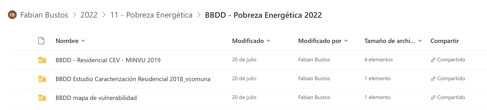

Capítulo 4 Exploración de Datos
Las bases de datos recibidas de Probreza Energética (27-07-2022), corresponden a 3 carpetas, las cuales en el presente capítulo se procederá un análisis descriptivo general.

Estructura de carpeta de Bases de Datos
4.1 BBDD mapa vulneravilidad
4.1.1 Descripción de Variables
Nombre Archivo: “Detalle de campos.xlsx”
| Nombre campo | Descripción | Fuente |
|---|---|---|
| REGION | Código región | INE, Censo 2017 |
| PROVINCIA | Código provincia | INE, Censo 2017 |
| COMUNA | Código comuna | INE, Censo 2017 |
| NOM_REGION | Nombre región | INE, Censo 2017 |
| NOM_PROVIN | Nombre provincia | INE, Censo 2017 |
| NOM_COMUNA | Nombre comuna | INE, Censo 2017 |
| DESTINO_VI | Uso o destino de la vivienda 2: vivienda colectiva 3: vivienda de temporada 4: vivienda desocupada 5: vivienda ocupada con moradores ausentes 6: vivienda ocupada con moradores presentes | INE, Pre censo 2016 |
| NOM_DIRECC | Nombre de calle o camino de referencia | INE, Pre censo 2016 |
| N_LETRA | Numeración | INE, Pre censo 2016 |
| LOCALIDAD | Nombre de localidad, área rural | INE, Censo 2017 |
| ENTIDAD | Nombre de entidad, área rural | INE, Censo 2017 |
| CATEGORIA | Nombres de categorías de asentamiento humano en área rural | INE, Censo 2017 |
| EMPRESA_ID | Identificador empresa distribuidora | SEC, 2018 |
| EMPRESA_1 | Nombre empresa distribuidora | SEC, 2018 |
| SSAA | 1: vivienda se ubica en sistema aislado 0: vivienda no se ubica en sistema aislado | Catastro SSAA, 2018 |
| NOM_SSAA | Nombre del sistema aislado | Catastro SSAA, 2018 |
| TIPO_SUM_S | Tipo de suministro del sistema eléctrico aislado: Parcial: menos de 24 horas al día Permanente: 24 horas al día | Catastro SSAA, 2018 |
| FV_IND | 1: vivienda tiene sistema individual de autogeneración 0: vivienda no tiene sistema individual de autogeneración | Catastro sistemas individuales, 2018 |
| NOM_FV_IND | Nombre del proyecto que dio origen al sistema individual | Catastro sistemas individuales, 2018 |
| SUMINS_FV | Tipo de suministro del sistema individual: Parcial: menos de 24 horas al día Permanente: 24 horas al día | Catastro sistemas individuales, 2018 |
| PROY_ELECT | 1: vivienda está incluida en algún proyecto de electrificación 0: vivienda no está incluida en algún proyecto de electrificación | Varias fuentes |
| EST_PROY_E | Estado del proyecto: ejecutado, en ejecución, RS, con financiamiento, en licitación. | Varias fuentes |
| NOM_PRO_EL | Nombre del proyecto | Varias fuentes |
| CODIGO_IDI | Código IDI del proyecto (código del banco integrado de proyectos) | Varias fuentes |
| X | Longitud | Obtenida en Arcgis |
| Y | Latitud | Obtenida en Arcgis |